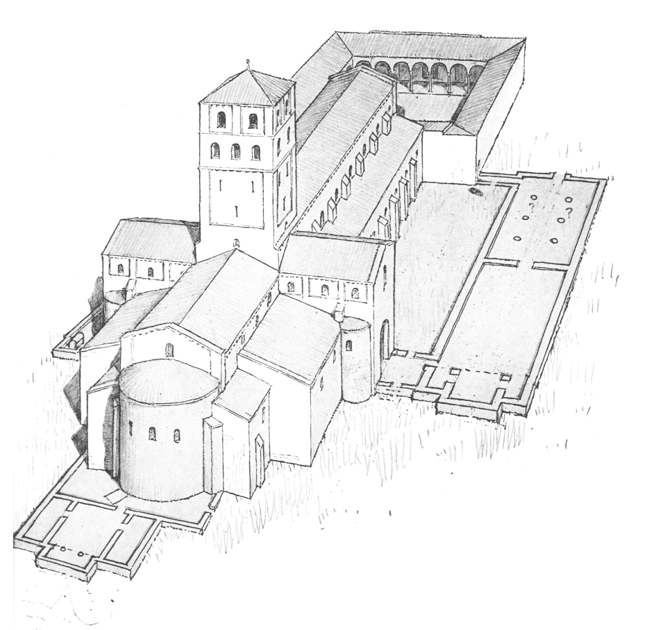
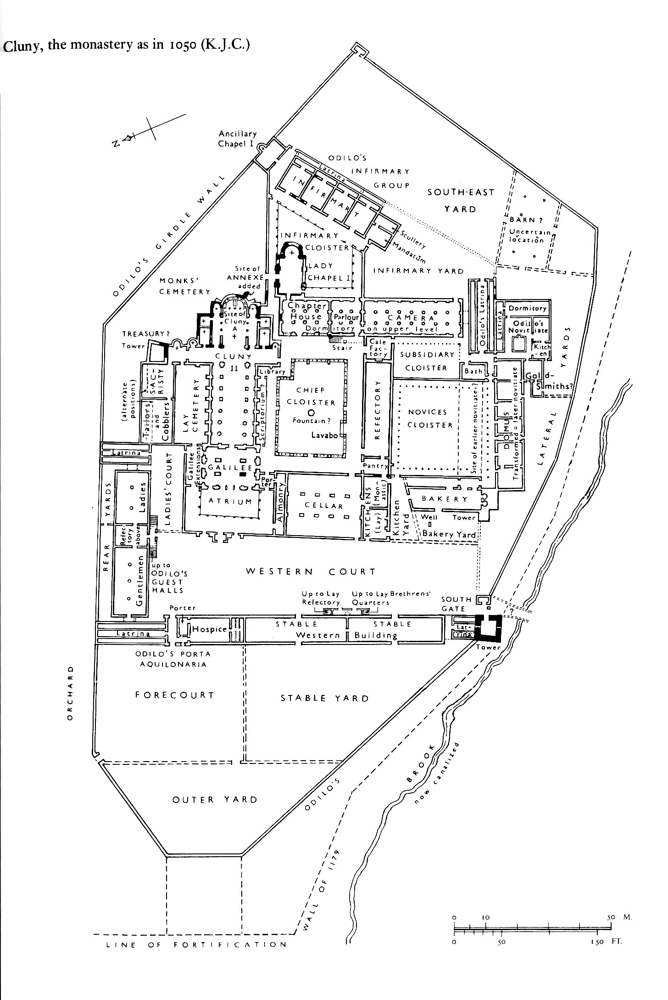

Cluny II
| In 948, Abbot Aymar (942-65, but blind after 954) started
construction
on a new church, Cluny II. It was completed under Abbot Mayeul
(965-994),
who had been librarian and bursar at Cluny, and had governed the abbey
during Aymar's blindness. The church was dedicated in 981, and
its
roof was re-made as a barrel-vault around 1010. Odilo (994-1048), of noble origin, became a monk at Cluny in 991. He quickly rose in the hierarchy, and succeeded Mayeul as abbot in 994. He was known for his gentleness and charity, prayer and penance, and monastic spirit. He had close connections with the emperors Otto III and Henry II, and travelled around Europe for diplomatic and religious reasons. In Odilo's biography, written c. 1051-63, it says that, like Augustus, he "found it [Cluny] of wood, and left it of marble". After the church was complete, Odilo sponsored a rebuilding of the monastery, which was finished around 1045 with the cloister. This was needed to to the great increase in the number of monks; by 1042, there were about 70 of them living at Cluny. |
 |
What we know of Cluny II, and of the other buildings in the monastery, comes from the Customary of Farfa, a description made of the monastery in 1032, found in a book in Farfa in Italy. The text tells what buildings were there, with very precise measurements of dimensions of rooms, numbers of windows, etc. We don't know if this was what was actually there (it was probably still under construction in 1032 anyway), or if it was the description of an idealized diagram, based on Cluny.
Together with later (17th and 18th century) detailed descriptions of Cluny's monastic buildings, scholars put together the diagram, below, showing how the monastery was laid out.
